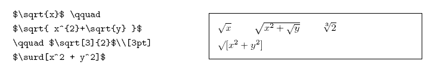
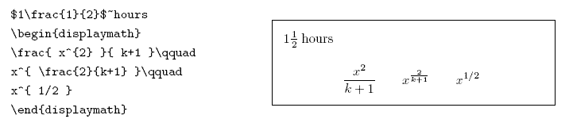
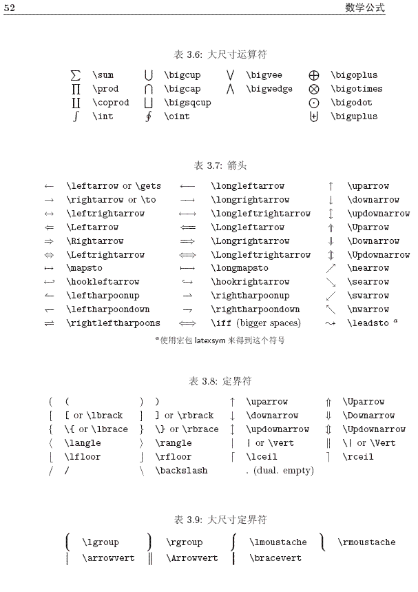
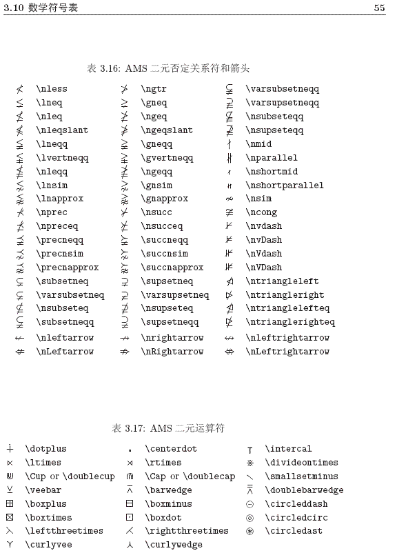
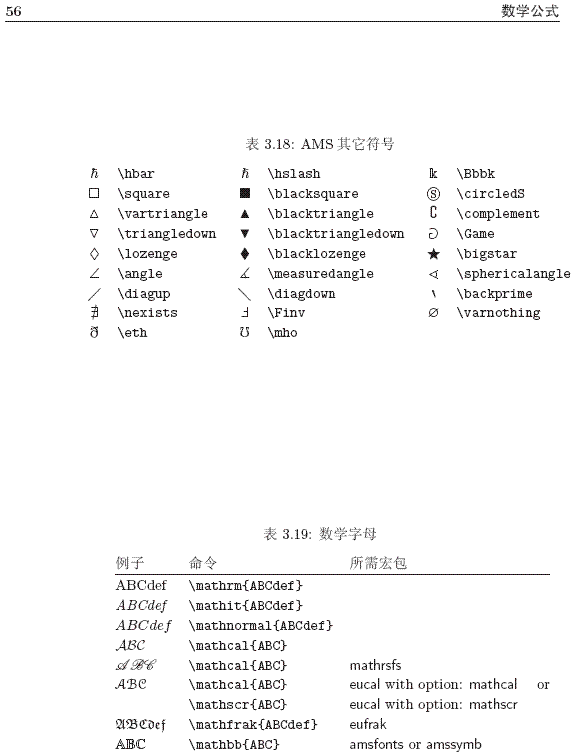

Lipai's Notebook
Jul 2020
Pai Li (李湃)
Periodic Table
Unit Conversion
Vasp
Scripts for job management system on super-computer
kMC simulation
Machine Learning tools
Python Scripts
Math notation in Latex
Vim skills
A ReStructuredText Primer
PDF documents
Lipai's Notebook
»
Math notation in Latex
View page source
Math notation in Latex
¶




